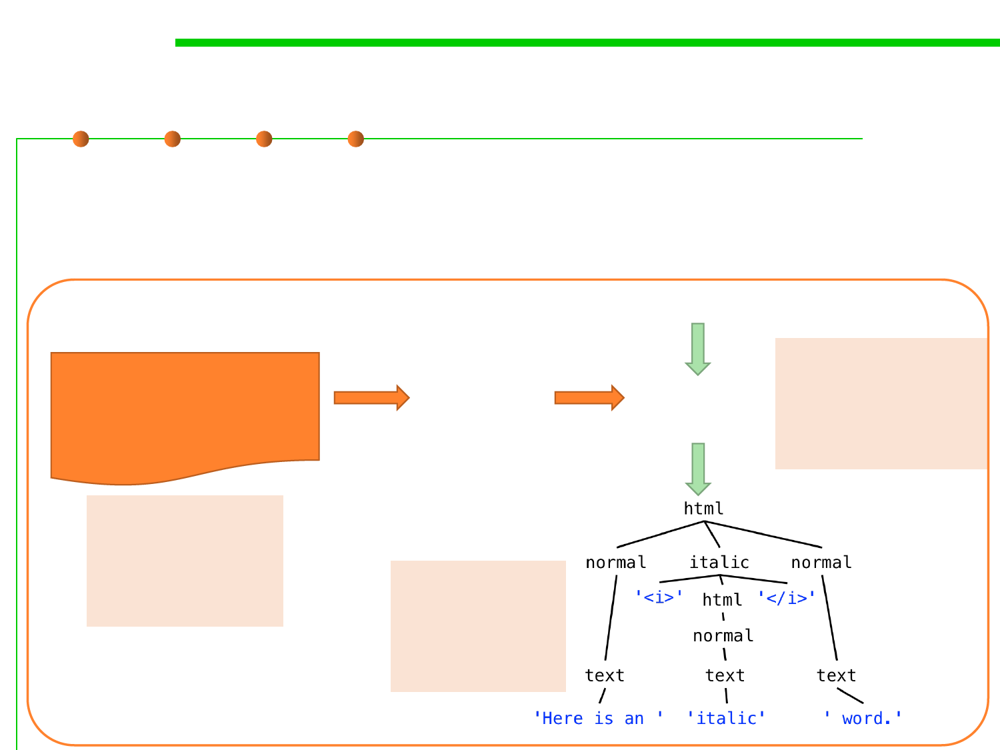

6.3 Maintainability-Oriented Construction Techniques
Grammar, Parser Generator, and Parser
▪ Grammar定义语法规则，Parser generator根据grammar定义的规则
产生一个parser，client利用parser来解析文本，看其是否符合语法定
义并对其做各种处理（例如转成parse tree）
Grammar
root ::= html;
html ::= ( italic | normal ) *;
italic ::= '<i>' html '</i>';
normal ::= text;
text ::= [^<>]+;
Here is an <i>italic</i> word.
Parser
Generator
(Tool)
例如：
Parser Java regex parser
(API or tool) HTML parser
Java compiler
例如：
正则表达式语法
HTML语法
Java语法
例如：
Regex pattern
HTML tree
Java AST